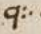
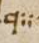
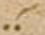
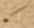
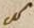
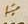
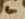
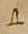

Signs for abbreviations:
 - scilicet
- scilicet
 - vel
- vel
 - id est
- id est
 - et
- et
 - est
- est
 - quae
 - quae
Signs for construe marks:
 - CONSTRUE MARK - TWO HORIZONTAL DOTS, DISTIGME - (marks words syntactically connected)
- CONSTRUE MARK - TWO HORIZONTAL DOTS, DISTIGME - (marks words syntactically connected)
 - CONSTRUE MARK DOT WITH RIGHT HALF RING - INSULAR QUOTATION SIGN - (marks the main verb in the sentence)
- CONSTRUE MARK DOT WITH RIGHT HALF RING - INSULAR QUOTATION SIGN - (marks the main verb in the sentence)
 - CONSTRUE MARK - TWO VERTICAL DOTS, DICOLON - (marks words syntactically connected)
- CONSTRUE MARK - TWO VERTICAL DOTS, DICOLON - (marks words syntactically connected)
 - CONSTRUE MARK CONVERGING STROKES WITH DOT ABOVE - (marks words syntactically connected)
- CONSTRUE MARK CONVERGING STROKES WITH DOT ABOVE - (marks words syntactically connected)
 - CONSTRUE MARK TWO CONVERGING STROKES-DIPLE - (marks words syntactically connected)
- CONSTRUE MARK TWO CONVERGING STROKES-DIPLE - (marks words syntactically connected)
Reference signs:
 - REFERENCE SIGN TWO HORIZONTAL DOTS WITH ACUTE
 - REFERENCE SIGN INVERTED N WITH DOT BELOW
- REFERENCE SIGN INVERTED N WITH DOT BELOW
 - REFERENCE SIGN HALF RING WITH DOT BELOW
- REFERENCE SIGN HALF RING WITH DOT BELOW
 - REFERENCE SIGN CRYPHIA
- REFERENCE SIGN CRYPHIA
 - REFERENCE SIGN TWO HORIZONTAL DOTS-DISTIGME
- REFERENCE SIGN TWO HORIZONTAL DOTS-DISTIGME
 - REFERENCE SIGN DOT WITH ACUTE
 - REFERENCE SIGN ACUTE FOLLOWED BY DOT
- REFERENCE SIGN ACUTE FOLLOWED BY DOT
 - REFERENCE SIGN TRIGON
- REFERENCE SIGN TRIGON
 - REFERENCE SIGN INVERTED TRIGON
- REFERENCE SIGN INVERTED TRIGON
 - REFERENCE SIGN OBLIQUE BALLON WITH ROPE
- REFERENCE SIGN OBLIQUE BALLON WITH ROPE
 - REFERENCE SIGN OBLIQUE V
- REFERENCE SIGN OBLIQUE V
 - REFERENCE SIGN TWO HORIZONTAL DOTS WITH STROKE BELOW
- REFERENCE SIGN TWO HORIZONTAL DOTS WITH STROKE BELOW
 - REFERENCE SIGN QUADRIGON
- REFERENCE SIGN QUADRIGON
 - REFERENCE SIGN ELONGATED M
- REFERENCE SIGN ELONGATED M
 - REFERENCE SIGN OCULUS
- REFERENCE SIGN OCULUS
 - REFERENCE SIGN LEMMA LEMMA 1
- REFERENCE SIGN LEMMA LEMMA 1
 - REFERENCE SIGN LEMMA LEMMA 2
- REFERENCE SIGN LEMMA LEMMA 2
 - REFERENCE SIGN LEMMA LEMMA 3
 - REFERENCE SIGN DOTTED OBELUS
- REFERENCE SIGN DOTTED OBELUS
 - REFERENCE SIGN CURSIVE ZETA
- REFERENCE SIGN CURSIVE ZETA
 - REFERENCE SIGN CROSS
- REFERENCE SIGN CROSS
 - REFERENCE SIGN S
- REFERENCE SIGN S
 - REFERENCE SIGN WAVED OBELUS WITH UNDERDOT
- REFERENCE SIGN WAVED OBELUS WITH UNDERDOT
 - REFERENCE SIGN Y
- REFERENCE SIGN Y
 - REFERENCE SIGN CONVERGING STROKES WITH DICOLON
Annotation signs:
 - MARGINAL ATTENTION SIGN NOTA
- MARGINAL ATTENTION SIGN NOTA
 - EXCERPTION SIGN POSITURA
- EXCERPTION SIGN POSITURA
 - EXCERPTION SIGN INVERTED PARAGRAPHUS
 - OMISSION SIGN CAPITAL DELTA
Praefatio
II 1,0 (1r,1) Priscianus Caesariensis grammaticus (1r,2) Iuliano consuli ac patricio
Text variation:
Edition: Caesariensis
Id: tv-1-0-1
Rubrication:
Edition: Priscianus ... patricio
Id: rubr-1-0-1
II 1,1 (1r,3) cum omnis eloquentiae doctrinam et omne studiorum genus
Rubrication:
Edition: cum
Id: rubr-1-0-2
II 1,2 sapientiae luce (1r,4) 〈praeful - C. G.〉 gens a Graecorum fontibus deriuatum Latinos proprio
II 1,3 sermone inuenio celebrasse et in omni (1r,5) bus illorum uestigia liberalibus
Gloss:
Gloss:
Gloss:
Gloss:
Gloss:
Gloss:
Gloss:
Gloss:
II 1,4 consecutos artibus uideo , nec solum ea, quae emendate ab illis sunt prolata, (1r,6) sed
Gloss:
Gloss:
Text variation:
Edition: ea
Id: tv-1-4-1
Text variation:
Edition: prolata
interlinear above
main scribe
syntactical glosses using symbols
Id: tv-1-4-2
Gloss:
II 1,5 etiam quosdam errores eorum amore grecorum ( main scribe) doctorum deceptos imitari, in quibus
Gloss:
Reference sign:
Edition: quibus
interlinear above
first glossator
Reference sign: lemma - gloss
Id: rs-1-5-1
Gloss:
II 1,6 maxime uetustissi (1r,7) ma grammatica ars arguitur peccasse, cuius auctores,
Gloss:
Gloss:
Gloss:
II 1,7 quanto sunt iuniores, tanto perspicaciores, et ingeniis floruisse (1r,8) et
Gloss:
Gloss:
Gloss:
II 1,8 diligentia ualuisse omnium iudicio confirmantur eruditissimorum (quid enim
Gloss:
Gloss:
II 1,9 Herodiani artibus certius, quid (1r,9) Apollonii scrupulosis quaestionibus
Gloss:
Gloss:
II 1,10 enucleatius possit inueniri?) cum igitur eos omnia fere uitia , quaecumque
Reference sign:
Edition: enucleatius
interlinear above
first glossator
Reference sign: lemma - gloss
Id: rs-1-10-1
Gloss:
Gloss:
Gloss:
Gloss:
Gloss:
Gloss:
Gloss:
II 1,11 antiquorum Grae (1r,10) corum commentariis sunt relicta artis grammaticae ,
Reference sign:
Edition: commentariis
interlinear above
first glossator
Reference sign: lemma - gloss
Id: rs-1-11-1
Gloss:
Gloss:
Gloss:
II 1,12 expurgasse comperio certisque rationis legibus emendasse, (1r,11) nostrorum autem
Gloss:
Gloss:
Gloss:
left margin
first glossator
II 1,13 neminem post illos imitatorem eorum extitisse, quippe in neglegentiam
Gloss:
Praefatio (continued)
II 2,1 cadentibus studiis literarum (1r,12) propter inopiam scriptorum, quamuis audacter,
Gloss:
II 2,2 sed non impudenter, ut puto, conatus sum pro uiribus rem arduam
Text variation:
Edition: impudenter
Id: tv-2-2-1
Reference sign:
Edition: impudenter
interlinear above
first glossator
Reference sign: lemma - gloss
Id: rs-2-2-1
Gloss:
Gloss:
Gloss:
Gloss:
Gloss:
Gloss:
Gloss:
II 2,3 quidem, sed officio professionis non indebitam, supra nominatorum praecepta
Gloss:
II 2,4 uirorum, quae congrua sunt (1r,14) uisa, in Latinum transferre sermonem, collectis
II 2,5 etiam omnibus fere, quaecumque necessaria nostrorum quoque inueniuntur (1r,15)
II 2,6 artium commentariis grammaticorum, quod gratum fore credidi
Gloss:
II 2,7 temperamentum, si ex utriusque linguae modera (1r,16) toribus elegantiora in unum
Reference sign:
Edition: moderatoribus
Id: rs-2-7-1
Gloss:
Gloss:
II 2,8 coeant corpus meo labore faciente, quia nec uituperandum me esse credo, si
Gloss:
II 2,9 eos imitor, (1r,17) qui principatum inter scriptores Graios artis grammaticae
II 2,10 possident, cum ueteres nostri in erroribus etiam, ut dic (1r,18) tum est, Graecos
II 2,11 aequiperantes maximam tamen laudem sunt consecuti.
Text variation:
Edition: aequiperantes
Id: tv-2-11-1
Reference sign:
Edition: equipperantes
interlinear above
first glossator
Reference sign: lemma - gloss
Id: rs-2-11-1
Gloss:
Text variation:
Edition: laudem sunt
Id: tv-2-11-2
II 2,12 exemplum etiam proponere placuit, ne pi (1r,19) geat alios etiam a me uel
II 2,13 ignorantia forte praetermissa uel uitiose dicta (nihil enim ex omni parte
II 2,14 perfectum in huma (1r,20) nis inuentionibus esse posse credo) sua quoque
Text variation:
Edition: inuentionibus esse posse credo) sua
Id: tv-2-14-1
Reference sign:
Edition: sua
Id: rs-2-14-1
Reference sign:
Edition: sua
Id: rs-2-14-2
Gloss:
II 2,15 industria ad communem literatoriae professionis utilitatem congrua ratio (1r,21) nis
II 2,16 proportione uel addere uel mutare tractantes. namque festinantius quam
Gloss:
II 2,17 uolui hos edere me libros compule (1r,22) runt, qui alienis laboribus insidiantes
Gloss:
II 2,18 furtimque et quasi per latrocinia scripta aliis subripientes unius nominis ad (1r,23)
II 2,19 titulum pertinentis infanda mutatione totius operis in se gloriam transferre
Gloss:
Explanation:
II 2,20 conantur. sed quoniam in tanta operis (1r,24) materia impossibile est aliquid
Text variation:
Edition: impossibile
Id: tv-2-20-1
II 2,21 perfectum breuiter exponi, spatii quoque ueniam peto, quamuis ad
Text variation:
Edition: perfectum breuiter
Id: tv-2-21-1
Gloss:
II 2,22 Herodiani scriptorum (1r,25) pelagus et ad eius patris Apollonii spatiosa uolumina
Text variation:
Edition: patris
Id: tv-2-22-1
II 2,23 meorum compendiosa sunt existimanda scripta librorum.
II 2,24 huius (1r,26) tamen operis te hortatorem sortitus iudicem quoque facio,
II 2,25 Iuliane consul ac patricie, cui summos dignitatis gra (1r,27) dus summa
Gloss:
Text variation:
Edition: patricie
Id: tv-2-25-1
II 2,26 adquisiuit in omni studio ingenii claritudo, non tantum accipiens ab excelsis
II 2,27 gradibus honorum (1r,28) pretii, quantum illis decoris addens tui, cuius mentem
II 2,28 tam Homeri credo quam Virgilii anima constare, quo (1r,29) rum uterque
II 2,29 arcem possederat musicae, te tertium ex utroque compositum esse
Text variation:
Edition: arcem
Id: tv-2-29-1
Reference sign:
Codex 50: artem
interlinear above
second glossator
Reference sign: lemma - gloss
Id: rs-2-29-1
Gloss:
Emendation:
Edition: possederat
Id: emendation-2-29-1
Text variation:
Edition: esse
Id: tv-2-29-2
II 2,30 confirmans, quippe non minus (1r,30) Graecorum quam Latinorum in omni doctrinae
II 2,31 genere praefulgentem. tibi ergo hoc opus deuoueo, omnis (1r,31) eloquentiae
Emendation:
Edition: genere
Id: emendation-2-31-1
Gloss:
Praefatio (continued)
II 3,1 praesul, ut quantamcumque mihi deus annuerit suscepti laboris gloriam,
Reference sign:
Edition: quantamcumque
Id: rs-3-1-1
Reference sign:
Edition: gloriam
Id: rs-3-1-2
Gloss:
Gloss:
Gloss:
II 3,2 te comite quasi sole quodam dilu (1r,32) cidius crescat.
II 3,3 titulos etiam uniuersi operis per singulos supposui libros, quo
II 3,4 facilius, quicquid ex his quaeratur, dis (1r,33) cretis possit locis inueniri.
Emendation:
Edition: inueniri
Id: emendation-3-4-1
II 3,5 primus liber continet de uoce et eius speciebus; de litera: quid sit
Rubrication:
Edition: primus
Id: rubr-3-5-1
II 3,6 litera, de eius generibus (1r,34) et speciebus, de singularum potestate, quae in
II 3,7 quas transeunt per declinationes uel compositiones partium orationis.
II 3,8 secundus (1r,35) de syllaba: quid sit syllaba, quot literis constare potest et
Text variation:
Edition: secundus
Id: tv-3-8-1
II 3,9 quo ordine et quo sono, de accidentibus singulis syllabis; (1v) (1v,1) de dictione: quid
Emendation:
Edition: accidentibus
Id: emendation-3-9-1
II 3,10 sit dictio, quae eius differentia ad syllabam; de oratione: quid sit oratio,
Emendation:
Edition: eius
Id: emendation-3-10-1
II 3,11 quot eius partes, de earum proprietate; de nomine: (1v,2) quid sit nomen, de
II 3,12 accidentibus ei, quot sunt species propriorum nominum, quot
II 3,13 appellatiuorum, quot adiectiuorum, quot deriuatiuorum; de patro (1v,3) nymicis: quot eorum
Text variation:
Edition: patronymicis
Id: tv-3-13-1
II 3,14 formae, quomodo deriuantur, ex quibus primitiuis; de diuersis
II 3,15 possessiuorum terminationibus et eorum regulis.
II 3,16 tertius de com (1v,4) paratiuis et superlatiuis et eorum diuersis extremitatibus:
Text variation:
Edition: tertius
Id: tv-3-16-1
Rubrication:
Edition: de
Id: rubr-3-16-1
II 3,17 ex quibus positiuis et qua ratione formantur; de diminutiuis: quot eorum
II 3,18 species, ex quibus (1v,5) declinationibus nominum, quomodo formantur.
II 3,19 quartus de denominatiuis et uerbalibus et participialibus et
Text variation:
Edition: quartus
Id: tv-3-19-1
Rubrication:
Edition: de
Id: rubr-3-19-1
II 3,20 aduerbialibus: quot eorum species, (1v,6) ex quibus primitiuis, quomodo nascuntur.
II 3,21 quintus de generibus dinoscendis per singulas terminationes; de
Text variation:
Edition: quintus
Id: tv-3-21-1
Rubrication:
Edition: de
Id: rubr-3-21-1
II 3,22 numeris; de figuris et earum compage; de casu. (1v,7)
II 3,23 sextus de nominatiuo casu per singulas extremitates omnium
Text variation:
Edition: sextus
Id: tv-3-23-1
Rubrication:
Edition: de
Id: rubr-3-23-1
II 3,24 nominum, tam in uocales quam in consonantes desinentium, per ordinem; de
II 3,25 genetiuorum (1v,8) tam ultimis quam paenultimis syllabis.
II 3,26 septimus de ceteris obliquis casibus, tam singularibus quam pluralibus.
Text variation:
Edition: septimus
Id: tv-3-26-1
Rubrication:
Edition: de
Id: rubr-3-26-1
Praefatio (continued)
II 4,1 octauus de uerbo et eius accidentibus. (1v,9)
Text variation:
Edition: octauus
Id: tv-4-1-1
Rubrication:
Edition: de
Id: rubr-4-1-1
Text variation:
Edition: eius
Id: tv-4-1-2
II 4,2 nonus de regulis generalibus omnium coniugationum.
Text variation:
Edition: nonus
Id: tv-4-2-1
Rubrication:
Edition: de
Id: rubr-4-2-1
II 4,3 decimus de praeterito perfecto.
Text variation:
Edition: decimus
Id: tv-4-3-1
Rubrication:
Edition: de
Id: rubr-4-3-1
II 4,4 undecimus de participio.
Text variation:
Edition: undecimus
Id: tv-4-4-1
Rubrication:
Edition: de
Id: rubr-4-4-1
II 4,5 duodecimus et tertiusdecimus de pronomine. (1v,10)
II 4,6 quartusdecimus de praepositione.
Text variation:
Edition: quartusdecimus
Id: tv-4-6-1
Rubrication:
Edition: de
Id: rubr-4-6-1
II 4,7 quintusdecimus de aduerbio et interiectione.
Text variation:
Edition: quintusdecimus
Id: tv-4-7-1
Rubrication:
Edition: de
Id: rubr-4-7-1
II 4,8 sextusdecimus de coniunctione.
Text variation:
Edition: sextusdecimus
Id: tv-4-8-1
Rubrication:
Edition: de
Id: rubr-4-8-1
II 4,9 septimusdecimus et octauusdecimus de constructione siue (1v,11) ordinatione
II 4,10 partium orationis inter se.
Liber Primus
II 5,0 INCIPIT ARS PRISCIANI GRAMMATICI CESARIENSIS (red capitalis rustica main scribe) liber primus de uoce
Text variation:
Edition: liber primus
Id: tv-5-0-2
Rubrication:
Edition: de uoce
Id: rubr-5-0-1
Gloss:
II 5,1 (1v,12) philosophi definiunt, uocem esse aerem tenuissimum ictum uel suum
Rubrication:
Edition: philosophi
Id: rubr-5-1-1
Reference sign:
Edition: philosophi
interlinear above
first glossator
Reference sign: lemma - gloss
Id: rs-5-1-1
Reference sign:
Edition: philosophi
interlinear above
second glossator
Reference sign: lemma - gloss
Id: rs-5-1-4
Gloss:
Gloss:
Gloss:
Reference sign:
Edition: uocem
interlinear above
second glossator
Reference sign: lemma - gloss
Id: rs-5-1-2
Gloss:
Gloss:
Gloss:
Reference sign:
Edition: ictum
interlinear above
second glossator
Reference sign: lemma - gloss
Id: rs-5-1-3
Gloss:
Gloss:
II 5,2 sensibile aurium, id est quod proprie auribus ac (1v,13) cidit. et est prior definitio
Gloss:
Gloss:
Gloss:
Gloss:
Gloss:
II 5,3 a substantia sumpta, altera uero a notione, quam Graeci ἔννοιαν dicunt,
Text variation:
Edition: ἔννοιαν
Id: tv-5-3-1
Reference sign:
Edition: a substantia
interlinear above
second glossator
Reference sign: lemma - gloss
Id: rs-5-3-1
Gloss:
Gloss:
II 5,4 hoc est ab accidentibus. (1v,14) accidit enim uoci auditus, quantum in ipsa est.
Reference sign:
Edition: enim
interlinear above
second glossator
Reference sign: lemma - lemma
Id: rs-5-4-1
Gloss:
Reference sign:
Edition: quantum
interlinear above
first glossator
Reference sign: lemma - gloss
Id: rs-5-4-2
Gloss:
Gloss:
II 5,5 uocis autem differentiae sunt quattuor: articulata, inarticulata, literata, (1v,15)
Reference sign:
Edition: differentiae
interlinear above
second glossator
Reference sign: lemma - lemma
Id: rs-5-5-1
II 5,6 illiterata. articulata est, quae coartata, hoc est copulata cum aliquo sensu
Gloss:
Gloss:
II 5,7 mentis eius, qui loquitur, profertur. inarticulata (1v,16) est contraria, quae a nullo
Rubrication:
Edition: inarticulata
Id: rubr-5-7-1
Gloss:
Gloss:
II 5,8 affectu proficiscitur mentis. literata est, quae scribi potest, illiterata, quae
Gloss:
II 5,9 scribi non potest. inue (1v,17) niuntur igitur quaedam uoces articulatae, quae
Gloss:
II 5,10 possunt scribi et intellegi, ut:
II 5,11 «arma uirumque cano»,
II 5,12 quaedam, quae non possunt scribi, (1v,18) intelleguntur tamen, ut sibili hominum
Gloss:
II 5,13 et gemitus: hae enim uoces , quamuis sensum aliquem significent proferentis
Reference sign:
Edition: enim
interlinear above
second glossator
Reference sign: lemma - lemma
Id: rs-5-13-1
Gloss:
II 5,14 eas, scribi tamen non possunt. (1v,19) aliae autem sunt, quae, quamuis scribantur,
Gloss:
II 5,15 tamen inarticulatae dicuntur, cum nihil significent, ut coax, cra. Eas enim uoces quanquam (1v,20) Intellegimus de quo sint uolucre profectę, tamen inarticulatae dicuntur, quia uox ut superius Inarticulata est quę a nullo affectu (1v,21) proficiscitur. ( main scribe) aliae
Explanation:
Gloss:
Gloss:
Reference sign:
Codex 50: affectu
interlinear above
second glossator
Reference sign: lemma - gloss
Id: rs-5-15-1
Gloss:
Gloss:
Liber Primus (continued)
II 6,1 uero sunt inarticulatae et illiteratae, quae nec scribi possunt nec intellegi,
II 6,2 ut |est| ( main scribe) crepitus, mugitus et similia. scire autem debemus, (1v,22) quod has quattuor
Reference sign:
Codex 50: scire
interlinear above
second glossator
Reference sign: lemma - gloss
Id: rs-6-2-1
Gloss:
II 6,3 species uocum perficiunt quattuor superiores differentiae generaliter uoci
Gloss:
Reference sign:
Edition: differentiae
interlinear above
second glossator
Reference sign: lemma - lemma
Id: rs-6-3-1
II 6,4 accidentes, binae per singulas inuicem coeuntes. (1v,23) uox autem dicta est uel
Text variation:
Edition: est uel
Id: tv-6-4-1
Emendation:
Edition: accidentes
Id: emendation-6-4-1
Reference sign:
Edition: accidentes
interlinear above
second glossator
Reference sign: lemma - gloss
Id: rs-6-4-1
Gloss:
Gloss:
Gloss:
Rubrication:
Edition: uox
Id: rubr-6-4-1
II 6,5 a uocando, ut dux a ducendo, uel ἀπὸ τοῦ βοῶ, ut quibusdam placet.
Gloss:
Emendation:
Edition: ἀπὸ τοῦ βοῶ
Id: emendation-6-5-1
Gloss:
Gloss:
II 6,6 de litera
Rubrication:
Edition: de litera
Id: rubr-6-6-1
II 6,7 litera est pars mini (1v,24) ma uocis compositae, hoc est uox ( main scribe) quae constat
Rubrication:
Edition: litera
Id: rubr-6-7-1
Reference sign:
Edition: litera
Id: rs-6-7-1
Gloss:
Gloss:
Reference sign:
Edition: compositae
above
first glossator
Reference sign: lemma - gloss
Id: rs-6-7-2
Gloss:
II 6,8 compositione literarum, minima autem, quantum ad totam comprehensionem
Gloss:
Gloss:
Gloss:
Reference sign:
Edition: quantum
Id: rs-6-8-1
Gloss:
Reference sign:
Edition: ad totam
Id: rs-6-8-2
Gloss:
II 6,9 uocis (1v,25) literatae (ad hanc enim etiam productae uocales breuissimae
Gloss:
Reference sign:
Edition: uocales
Id: rs-6-9-1
Gloss:
II 6,10 partes inueniuntur) uel quod omnium est breuissimum eorum, (1v,26) quae diuidi
II 6,11 possunt, id quod diuidi non potest. possumus et sic definire: litera |est| ( main scribe) uox,
II 6,12 quae scribi potest indiuidua.
II 6,13 dicitur autem lit (1v,27) era uel quasi legitera, quod legendi iter praebeat,
Reference sign:
Edition: litera
Id: rs-6-13-1
Gloss:
II 6,14 uel a lituris, ut quibusdam placet, quod plerumque in ceratis tabulis
Gloss:
Text variation:
Edition: in
Id: tv-6-14-1
II 6,15 antiqui scri (1v,28) bere solebant litteris ( main scribe) . literas autem etiam elementorum uocabulo
Text variation:
Edition: antiqui
Id: tv-6-15-2
II 6,16 nuncupauerunt ad similitudinem mundi elementorum: sicut enim illa coeun (1v,29) tia omne
Gloss:
II 6,17 perficiunt corpus, sic etiam haec coniuncta literalem uocem quasi corpus
II 6,18 aliquod componunt uel magis uere cor (1v,30) pus. nam si aer corpus |est| ( main scribe) et uox,
Gloss:
Emendation:
Edition: si
Id: emendation-6-18-1
Gloss:
II 6,19 quae ex aere icto constat, corpus esse ostenditur, quippe cum et tangit
II 6,20 aurem et tripertito (1v,31) diuiditur, quod |est| ( main scribe) suum corporis, hoc |est| ( main scribe) in ( main scribe)
II 6,21 altitudinem, latitudinem, longitudinem, unde ex omni quoque parte potest audiri.
Text variation:
Edition: ex omni quoque parte
Id: tv-6-21-1
Text variation:
Edition: potest
Id: tv-6-21-2
Gloss:
Gloss:
Gloss:
Edition: altitudinem, latitudinem, longitudinem
II 6,22 praeterea (1v,32) tamen singulae syllabae altitudinem quidem habent in tenore,
Rubrication:
Edition: praeterea
Id: rubr-6-22-1
II 6,23 crassitudinem uero uel latitudinem in spiritu, longitudinem in tempore. (1v,33)
Edition: longitudinem in tempore
II 6,24 litera igitur |est| ( main scribe) nota elementi et uelut imago quaedam uocis literatae,
II 6,25 quae cognoscitur ex qualitate et quantitate figurae linearum. (1v,34) hoc ergo
Rubrication:
Edition: hoc
Id: rubr-6-25-1
II 6,26 interest inter elementa et literas, quod elementa proprie dicuntur ipsae
Gloss:
Liber Primus (continued)
II 7,1 pronuntiationes, notae autem earum literae. (1v,35) abusiue tamen et elementa pro
Reference sign:
Edition: abusiue
above
first glossator
Reference sign: lemma - gloss
Id: rs-7-1-1
Gloss:
II 7,2 literis et literae pro elementis uocantur. cum enim dicimus non posse
II 7,3 constare in eadem syllaba r (1v,36) ante p, non de literis dicimus, sed de
II 7,4 pronuntiatione earum: nam quantum ad scripturam possunt coniungi, non tamen
II 7,5 etiam enuntiari, (1v,37) nisi postposita r.
II 7,6 sunt igitur figurae literarum quibus nos utimur uiginti tres, ipsae
Rubrication:
Edition: sunt
Id: rubr-7-6-1
Text variation:
Edition: igitur
Id: tv-7-6-1
Text variation:
Edition: uiginti tres
Id: tv-7-6-2
II 7,7 uero pronuntiationes earum multo ampliores, quip (1v,38) pe cum singulae uocales
II 7,8 denos inueniantur sonos habentes uel plures, ut puta a litera breuis
Gloss:
Gloss:
II 7,9 quattuor habet soni diffe (1v,39) rentias, (2r) (2r,1) cum habet aspirationem et acuitur uel
II 7,10 grauatur, et rursus cum sine aspiratione acuitur uel grauatur, ut hábeo
Text variation:
Edition: uel
inline
main scribe
Id: tv-7-10-1
II 7,11 hàbemus, ábeo àbimus. (2r,2) longa uero eadem sex modis sonat: cum habet
Rubrication:
Edition: longa
Id: rubr-2-0-1
II 7,12 aspirationem et acuitur uel grauatur uel circumflectitur et rursus cum sine
Text variation:
Edition: uel grauatur
inline
main scribe
Id: tv-7-12-1
II 7,13 aspiratione (2r,3) acuitur uel grauatur uel circumflectitur, ut hámis hàmorum
Text variation:
Edition: hàmorum
inline
main scribe
Id: tv-7-13-1
II 7,14 hâmus, árae àrarum âra. similiter aliae uocales possunt pro (2r,4) ferri.
Gloss:
Text variation:
Edition: àrarum
inline
main scribe
Id: tv-7-13-2
Text variation:
Edition: âra.
inline
main scribe
Id: tv-7-13-3
II 7,15 praeterea tamen i et u uocales, quando mediae sunt, alternos inter
Rubrication:
Edition: praeterea
Id: rubr-2-0-2
II 7,16 se sonos uidentur confundere, teste Donato, ut uir, (2r,5) optumus, quis.
Emendation:
Edition: optumus
Id: emendation-7-16-1
II 7,17 et i quidem, quando post u consonantem loco digamma functam Aeolici
II 7,18 ponitur breuis, sequente d uel m (2r,6) uel r uel t uel x, sonum y Graecae
Text variation:
Edition: uel m
inline
main scribe
Id: tv-7-18-1
II 7,19 uidetur habere, ut uideo, uim, uirtus, uitium, uix, u autem,
Rubrication:
Edition: u autem
Id: rubr-2-0-3
II 7,20 quamuis contractum, eun (2r,7) dem tamen [hoc est y] sonum habet, inter q et e uel
Reference sign:
Edition: contractum
Id: rs-7-20-1
Gloss:
Emendation:
Edition: inter
Id: emendation-7-20-1
II 7,21 i uel ae diphthongum positum, ut que, quis, quae, nec non inter
Text variation:
Edition: diphthongum
Id: tv-7-21-1
II 7,22 g et eas (2r,8) dem uocales, cum in una syllaba sic inuenitur, ut pingue,
II 7,23 sanguis, linguae.
II 7,24 in consonantibus etiam sunt differentiae plures, trans (2r,9) euntium in alias
Rubrication:
Edition: in consonantibus
Id: rubr-7-24-1
Text variation:
Edition: sunt differentiae plures
Id: tv-7-24-1
II 7,25 et non transeuntium, quippe diuersae sunt potestatis.
II 7,26 accidit igitur literae nomen, figura, potestas:
Rubrication:
Edition: accidit
Id: rubr-7-26-1
Gloss:
II 7,27 nomen, (2r,10) uelut a, b. et sunt indeclinabilia tam apud Graecos
Liber Primus (continued)
II 8,1 elementorum nomina quam apud Latinos, siue quod a barbaris inuen (2r,11) ta dicuntur,
Edition: dicuntur
Gloss:
II 8,4b siue quod
II 8,5 simplicia haec et stabilia esse debent quasi fundamentum omnis doctrinae
II 8,6 immobile, siue quod nec aliter (2r,12) apud Latinos poterant esse, cum a suis
II 8,7 uocibus uocales nominentur, semiuocales uero in se desinant, mutae a se
Gloss:
II 8,8 incipientes uo (2r,13) cali terminentur, quas si flectas, significatio quoque nominum
II 8,9 una euanescit.
Reference sign:
Edition: una
interlinear above
first glossator
Reference sign: lemma - gloss
Id: rs-8-9-1
Gloss:
II 8,10 uocales igitur, ut dictum est, per se prolatae no (2r,14) men suum ostendunt,
Rubrication:
Edition: uocales
Id: rubr-8-10-1
II 8,11 semiuocales uero ab e incipientes et in se terminantes, absque x, quae sola ( main scribe) ab
Rubrication:
Edition: semiuocales
Id: rubr-8-11-1
II 8,12 i incipit per anastrophen (2r,15) Graeci nominis ξῖ, quia necesse fuit, cum sit
Text variation:
Edition: anastrophen
Id: tv-8-12-1
Reference sign:
Codex 50: apostrophen
interlinear above
first glossator
Reference sign: lemma - gloss
Id: rs-8-12-1
Gloss:
Text variation:
Edition: ξῖ
Id: tv-8-12-2
II 8,13 semiuocalis, a uocali incipere et in se terminare, quae nouissime a Latinis (2r,16)
Gloss:
II 8,14 assumpta post omnes ponitur literas, quibus Latinae dictiones egent (quod
II 8,15 autem ab i incipit eius nomen, ostendit etiam Ser (2r,17) uius in commento
II 8,16 quod scribit in Donatum his uerbis: semiuocales sunt septem,
Text variation:
Edition: scribit
Id: tv-8-16-1
Text variation:
Edition: septem
Id: tv-8-16-2
II 8,17 quae ita proferuntur, ut inchoent ab e litera (2r,18) et desinant in
II 8,18 naturalem sonum, ut ef, el, em, en, er, es, ix. sed ix ab i
Text variation:
Edition: sed ix
Id: tv-8-18-1
II 8,19 inchoat. id etiam Eutropius confirmat dicens: (2r,19) una duplex ix, quae
Text variation:
Edition: ix
Id: tv-8-19-1
II 8,20 ideo ab i incipit, quia apud Graecos in eandem desinit), mutae
Rubrication:
Edition: mutae
Id: rubr-8-20-1
II 8,21 autem a se incipientes et in e uocalem (2r,20) desinentes, exceptis q et k,
II 8,22 quarum altera in u, altera in a finitur, sua conficiunt nomina. h enim
II 8,23 aspirationis ma (2r,21) gis est nota.
Liber Primus (continued)
II 9,1 Figurae accidunt quas uidemus in singulis literis.
Rubrication:
Edition: Figurae
Id: rubr-9-1-1
II 9,2 Potestas autem ipsa pronuntiatio, propter quam et figurae (2r,22) et nomina
Rubrication:
Edition: Potestas
Id: rubr-9-2-1
Gloss:
Explanation:
Gloss:
Reference sign:
Codex 50: nomina
Id: rs-9-2-1
Gloss:
II 9,3 facta sunt. quidam addunt etiam ordinem, sed pars est potestatis
II 9,4 literarum.
II 9,5 ex his uocales dicuntur, quae per se (2r,23) uoces perficiunt uel sine quibus
II 9,6 uox literalis proferri non potest, unde et nomen hoc praecipue sibi
II 9,7 defendunt; ceterae enim, quae (2r,24) cum his proferuntur, consonantes appellantur.
Reference sign:
Codex 50: defendunt
Id: rs-9-7-1
Gloss:
II 9,8 sunt igitur uocales numero quinque: a e i o u. utimur autem ( main scribe) etiam y
Rubrication:
Edition: sunt
Id: rubr-9-8-1
Text variation:
Edition: quinque
Id: tv-9-8-2
II 9,9 Graecorum cau (2r,25) sa nominum.
II 9,10 consonantium autem aliae sunt semiuocales, aliae mutae:
Text variation:
Edition: sunt
Id: tv-9-10-1
II 9,11 semiuocales sunt, ut plerisque Latinorum placuit, (2r,26) septem: f l m n r
Text variation:
Edition: septem
Id: tv-9-11-1
Edition: f
interlinear below
excerption sign inverted paragraphus
II 9,12 s x; sed f multis modis ostenditur muta magis, de qua post docebimus.
Edition: docebimus
II 9,13 z quoque utimur in Graecis dic (2r,27) tionibus. hae ergo [hoc est semiuocales]
II 9,14 quantum uincuntur a uocalibus, tantum superant mutas. ideo apud
II 9,15 Graecos quidem (2r,28) omnes dictiones uel in uocales uel in semiuocales, quae
II 9,16 secundam habent euphoniam, desinunt, quam nos sonoritatem possu (2r,29) mus dicere,
Reference sign:
Codex 50: secundam
Id: rs-9-16-1
Gloss:
II 9,17 apud Latinos autem ex maxima parte, non tamen omnes, inueniuntur
II 9,18 enim quaedam etiam in mutas desinentes. semi (2r,30) uocales autem sunt
Rubrication:
Edition: semiuocales
Id: rubr-9-18-1
II 9,19 appellatae, quae plenam uocem non habent, ut semideos et semiuiros
Reference sign:
Codex 50: semideos
interlinear above
first glossator
Reference sign: lemma - gloss
Id: rs-9-19-1
Gloss:
Gloss:
II 9,20 appellamus, non qui dimidiam partem (2r,31) habent deorum uel uirorum, sed qui
Text variation:
Edition: uel
Id: tv-9-20-1
II 9,21 pleni dii uel uiri non sunt.
II 9,22 reliquae sunt mutae, ut quibusdam uidetur, numero nouem: (2r,32) b c d g
Text variation:
Edition: nouem
Id: tv-9-22-1
II 9,23 h k p q t. et sunt qui non bene hoc nomen putant eas accepisse, cum
Text variation:
Edition: eas
Id: tv-9-23-1
II 9,24 hae quoque pars sint uocis. qui nesciunt, quod ad (2r,33) comparationem bene
II 9,25 sonantium ita sint nominatae, uelut informis dicitur mulier, non quae
Emendation:
Edition: uelut
Id: emendation-9-25-1
II 9,26 caret forma, sed quae male est (2r,34) formata, et frigidum dicimus eum, qui
Text variation:
Edition: quae
Id: tv-9-26-1
II 9,27 non penitus expers est caloris, sed qui minimo hoc utitur: sic igitur etiam
Gloss:
Explanation:
II 9,28 mutas, non (2r,35) quae omnino uoce carent, sed quae exiguam partem uocis
II 9,29 habent.
II 9,30 uocales apud Latinos omnes sunt ancipites uel liquidae, (2r,36) hoc est quae
Gloss:
II 9,31 facile modo produci modo corripi possunt, sicut etiam apud antiquissimos
II 9,32 erant Graecorum ante inuentio (2r,37) nem η et ω, quibus inuentis ε et ο, quae
Text variation:
Edition: η et ω
Id: tv-9-32-1
Liber Primus (continued)
II 10,1 ante ancipites erant, remanserunt perpetuo breues, cum earum